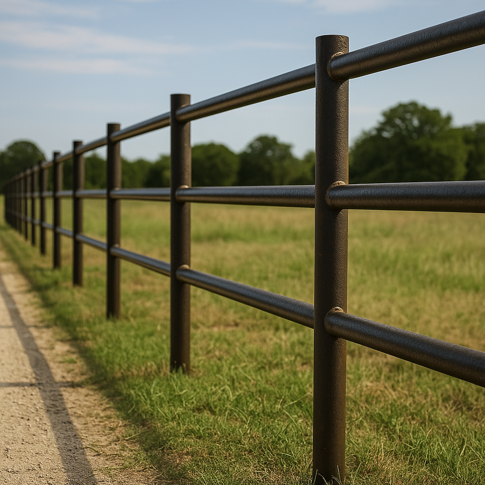

Pipe Fencing
Heavy-duty pipe fencing for acreage properties, entrances, road frontage, and boundary lines.
Fence Contractor Aubrey TX
Leatherneck Welding builds pipe fencing, ranch fencing, custom gates, perimeter fencing, and fence repairs for Aubrey homes, acreage properties, ranches, and growing North Texas communities.

Aubrey has a strong mix of acreage properties, new homes, ranch-style lots, and fast-growing neighborhoods. Fencing here needs to balance appearance, privacy, security, and long-term durability.
Whether you need a pipe fence, custom driveway gate, privacy fence, perimeter fencing, or repairs to an existing fence line, Leatherneck Welding builds strong fence systems designed for North Texas conditions.
We serve Aubrey, Pilot Point, Denton, Sanger, Valley View, Gainesville, and surrounding North Texas communities.
We regularly review projects outside these areas.Heavy-duty pipe fencing for acreage properties, entrances, road frontage, and boundary lines.
Driveway gates, entry gates, ranch gates, and access gates built to match your property.
Clean, durable fence lines for homes, shops, barns, acreage, and larger lots.
Privacy and security-focused fencing for homes, backyards, and residential property lines.
Practical fencing for livestock, pasture separation, rural lots, and working properties.
Repairs for damaged posts, sagging gates, broken braces, corners, and worn fence sections.
We focus on fence work that looks clean, functions correctly, and holds up. From custom gates to pipe fencing and residential perimeter lines, the goal is durable craftsmanship built around the property.
Project photos will be added here as Aubrey-area fence projects are completed.


Yes. Leatherneck Welding provides fence installation, custom gates, pipe fencing, perimeter fencing, privacy fencing, and fence repair in and around Aubrey.
Yes. We build pipe fencing for acreage properties, entrances, road frontage, ranches, and perimeter fence systems.
Yes. We build custom driveway gates, access gates, ranch gates, entry gates, and welded gate upgrades designed to match your fence line.
Yes. We serve surrounding North Texas communities and regularly review projects outside the listed service areas.
Send us your rough layout, photos, or project details and we’ll help you get started.